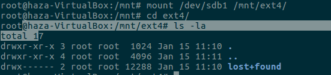
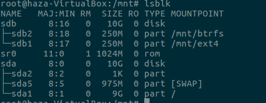

Untuk mengorganisasi file-file pada device diperlukan suatu metode yang disebut dengan filesystem. Jika Anda mengenal FAT selama ini di sistem operasi Windows maka Anda akan mengenal beberapa metode filesystem di Linux, seperti ext fs, ext2 fs atau xia fs dll. Saat ini ext4 adalah filesystem yang banyak digunakan untuk Linux karena terkenal sangat efisien. Meskipun demikian Red Hat Linux tetap menyediakan dukungan terhadap filesystem lain seperti msdos yang sudah built in di kernel atau dalam bentuk modul seperti vfat (Windows95 native fs), ext,umsdos dan sebagainya.
Beberapa configurasi file system :
Membuat file system :
Sebelum kita membuat file system pastikan kalian sudah membuat partisi di hardisk kalian,jika belum ikuti perintah berikut :
$ sudo fdisk /dev/sdb(nama hardisknya)
jika kalian bingung cara membuatnya kalian bisa click website ini partisi
Setelah itu ikuti command berikut :
$ sudo mkfs
Jika sudah maka kita akan membuat file system ext4,ikuti command berikut :
$ sudo mkfs -t ext4 /dev/sdb1(nama partisi)
Setelah itu kita akan membuat folder ext4 dan btrfs di dalam /mnt :
$ cd /mnt
$ sudo mkdir ext4
$ sudo mkdir btrfs
Selanjutnya kita akan mengemount folder ext4 dengan perintah berikut :
$ sudo mount /dev/sdb1(nama pertisi) /mnt/ext4
Selanjutnya kita akan membuat file system btrfs,ikuti command berikut :
$ sudo mkfs -t btrfs /dev/sdb2(nama partisi)
Jika kalian mengalami error seperti berikut,maka anda belum mendownload btrfs.anda bisa mendownloadnya dengan command setelah gambar :

$ sudo apt-get update
$ sudo apt-get install btrfs-tools
Setelah kalian selesai mendownloadnya,maka jalankan lagi command untuk membuat btrfs.
Jika kalian sudah membuat file system btrfs,maka kita akan mengemountnya:
$ sudo mount /dev/sdb2 /mnt/btrfs
Selanjutnya kita akan mengecek apakah dimountpoint ada tambahan /mnt/ext4 dan /mnt/btrfs jika ada maka kalian telah berhasil,untuk melihatnya ikuti perintah berikut :
$ lsblk
Mungkin hanya itu saya yang bisa saya sampaikan saat ini,semoga berhasil mencoba kawan.jika terjadi error atau hal lain maka bisa chat dengan admin lewat medsos dibawah.